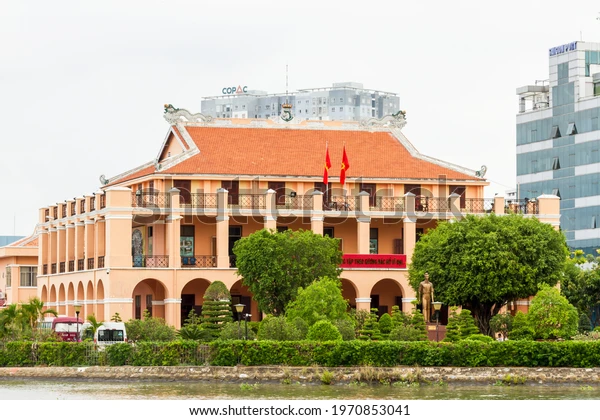

This is where you can find information about major attractions in Vietnam
Before diving into details, this is a video generally talking about some attractions in Vietnam
Go to guide about Ha Long Bay, The Imperial Citadel of Hue, Dragon Wharf
Ha Long Bay
One of the must-see attractions during your visit to Northern Vietnam is Ha Long Bay. This is a UNESCO World Heritage Site located in Quang Ninh Province, Vietnam Ha Long Bay is a cluster of about 1,600 limestone monolithic island with a lot of jungle vegetation. Many of those islands are hollow with enormous caves, making the bay one of the best places to visit in Vietnam. A community of around 1,600 people live on Ha Long Bay in four fishing villages: Cua Van, Ba Hang, Cong Tau and Vong Vieng in Hung Thang ward, Ha Long city. They live on floating houses and are sustained through fishing and marine aquaculture.
For travellers who want to spend the holiday in Ha Long Bay, Cat Ba Island is one of the places you cannot miss. This is the largest island of Ha Long Bay, which is home to some nice hotels; Cat Ba National Park, which covers one third of the island; and a number of tourist attractions connected to the Vietnam War, more notably the Hospital Cave, an underground, bomb-proof hospital and safe house. Another activity travellers should try out is visiting caves, especially Sung Sot Cave - the biggest cave of Ha Long Bay located on Bo Hon Island that have materials about a lot of well-known Vietnamese folklore.
The Imperial Citadel of Hue
The Imperial Citadel is a walled enclosure within the citadel of the city of Hue, the former imperial capital of Vietnam during the Nguyen dynasty. It contains the palaces that housed the imperial family, as well as shrines, gardens, and villas for mandarins. Constructed in 1803 under Emperor Gia Long as a new capital, it mostly served a ceremonial function during the French colonial period. After the end of the monarchy in 1945, it suffered heavy damage and neglect during the Indochina Wars through the 1980s. The Imperial City was designated as a UNESCO World Heritage Site in 1993 and is undergoing restoration.
When visiting Hue, apart from the Imperial Citadel, the Perfume River flowing right beside it is another marvellous site tourists cannot miss. There is a delightful waterfront promenade along the banks of the river and this makes a great place to come for a scenic walk in the evenings. Hue is often said to have some of the best food in Vietnam and with that in mind you need to make sure that you sample all the delights on a trip here. As Hue was once one of the most important royal cities in Vietnam, it was also one of the premium producers of famed Imperial Banquets. And if you are looking for a sweet treat in the city then make sure to check out the local candy which is made of sesame seeds.
Dragon Wharf
Nha Rong Wharf was built in 1863 in Southern Vietnam, the former headquarter of French Five Star Vessel Corporate located at the junction of the Saigon River and Ben Nghe river. This is where Nguyen Tat Thanh, also known as President Ho Chi Minh went to seek the ways for national salvation. After more than 30 years of traveling overseas, Nguyen Tat Thanh became revolutionary leaders guide Vietnam People to conduct the August Revolution, established the Democratic Republic of Vietnam. The noble and sacred value of this place has been kept and protected by Vietnamese for years.
Beside the Dragon Wharf, if tourists want to know more about Vietnam's history, visit the War Remnants Museum. This is one of the most popular museums in all of Vietnam and more than half a million visitors come here every year. Some of the items on display include old military vehicles like Huey helicopters as well as attack bombers and M48 Patton tanks. Inside travellers will also find personal memorabilia of victims of the war as well as old photographs. Another essential thing to do during the trip is to have a bowl of Pho - the national dish of Vietnam. The soup is made with stock to which the noodles are then added and customers can choose from a variety of toppings to customize the dish, making a delicious meal.